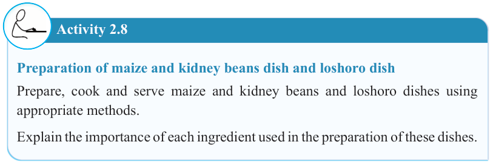
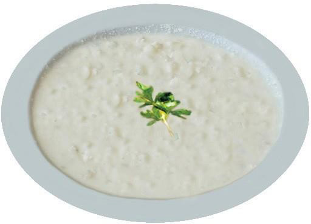

36


Food and Human Nutrition

Form Two

4. Remove the mixture from the heat and stir or whisk the mixture to soften the bananas and leave them to cool.
5. Add sour milk gradually to achieve the desired consistency. More milk can be added if needed.
6. Serve it in a bowl and garnish it with parsley or any suitable garnish as shown in Figure 2.6.

Figure 2.6: Loshoro
Activity 2.8
Preparation of maize and kidney beans dish and loshoro dish
Prepare, cook and serve maize and kidney beans and loshoro dishes using appropriate methods.
Explain the importance of each ingredient used in the preparation of these dishes.
Fried vermicelli
Ingredients (serve 2 people)
30 g sugar
250 g vermicelli
2 g ground cardamom
40 mls cooking oil
1 parsley leaf
Water
2 g salt (optional)
17/09/2025 16:30